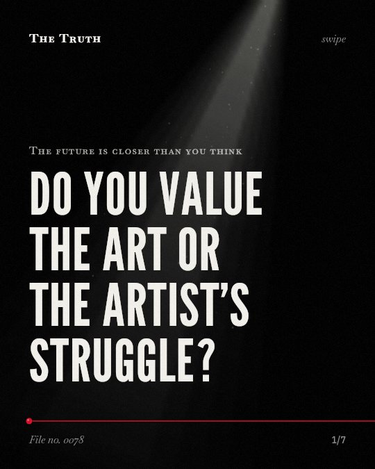

The future is closer than you think
Do you value the art or the artist's struggle?

You devalue art when you know it is ai-made.
People give lower ratings to ai art even when it is indistinguishable from human work. This happens because you perceive less effort in the process.
Supported. At least one solid peer-reviewed study. The evidence backs this.
What the research found
People devalue art labeled as AI-made even when they report it is indistinguishable from human-made art.
“We find that people devalue art labeled as AI-made across a variety of dimensions, even when they report it is indistinguishable from human-made art”
Experiment, 2023. Horton et al., Scientific Reports.
The negative bias toward AI-generated art does not primarily stem from rapid, stimulus-driven automatic processing.
“we showed that this bias does not primarily stem from rapid, stimulus-driven automatic processing.”
Experiment, 2026. Wang et al., Frontiers in psychology.
Providing interpretive semantic cues—brief textual descriptions that support meaning construction during controlled processing—significantly mitigated the bias against AI-generated art.
“providing interpretive semantic cues-brief textual descriptions that support meaning construction during controlled processing-significantly mitigated the bias against AI-generated art.”
Experiment, 2026. Wang et al., Frontiers in psychology.
People sometimes—but not always—ascribe lower creativity to a product when they are told that the producer is an AI rather than a human.
“we found that people sometimes—but not always—ascribe lower creativity to a product when they are told that the producer is an AI rather than a human.”
Experiment, 2023. Magni et al., Journal of Business and Psychology.
People consistently perceive generative AI to exert less effort than humans in the creation of a given artifact, which drives the lower creativity ratings ascribed to generative AI producers.
“we found that people consistently perceive generative AI to exert less effort than humans in the creation of a given artifact, which drives the lower creativity ratings ascribed to generative AI producers.”
Experiment, 2023. Magni et al., Journal of Business and Psychology.
Knowledge of human engagement in the artistic process contributes positively to appraisals of art.
“these studies demonstrate that people tend to be negatively biased against AI-created artworks relative to purportedly human-created artwork, and suggest that knowledge of human engagement in the artistic process contributes positively to appraisals of art.”
Experiment, 2023. Bellaiche et al., Cognitive Research Principles and Implications.
Effort shapes your perception of creativity.
You consistently view ai as exerting less effort than humans. This belief drives the lower creativity scores you give to generative products.
The bias is not automatic.
Your reaction is not a reflex. It can be changed by the way information is framed or by providing simple textual descriptions that support meaning.
This part is our reading of the evidence, not a finding.
A painting on a gallery wall.
You stand in a quiet room. You look at a canvas. You feel a connection to the artist's struggle until you see the label.
The honest summary
The evidence shows a consistent negative bias toward AI-generated art driven by perceptions of effort and social identification, though this bias is not automatic and can be influenced by specific framing and context.
The findings regarding lower creativity ratings are not universal, as the study notes that people do not always ascribe lower creativity to AI-produced products.
What part of your taste is a reaction to effort?
Sources
- Lucas Bellaiche, Rohin Shahi, Martin Harry Turpin et al. (2023). Humans versus AI: whether and why we prefer human-created compared to AI-created artwork. Cognitive Research Principles and Implications. Experiment, cited 222 times.
- C. Blaine Horton, Michael White, Sheena S. Iyengar (2023). Bias against AI art can enhance perceptions of human creativity. Scientific Reports. Experiment, cited 111 times.
- Federico Magni, Jiyoung Park, Melody Manchi Chao (2023). Humans as Creativity Gatekeepers: Are We Biased Against AI Creativity?. Journal of Business and Psychology. Experiment, cited 200 times.
- Wang Y, Cao Y, Cai J, Sun B (2026). Where does the bias begin? Cognitive processing differences in the aesthetic evaluation of AI-generated art. Frontiers in psychology. Experiment.
Also read for this file, not quoted
This file was researched and drafted by software, then checked by rules a model cannot talk its way around: each quote above was matched word for word against the paper, and every number had to appear in it. How files are made.